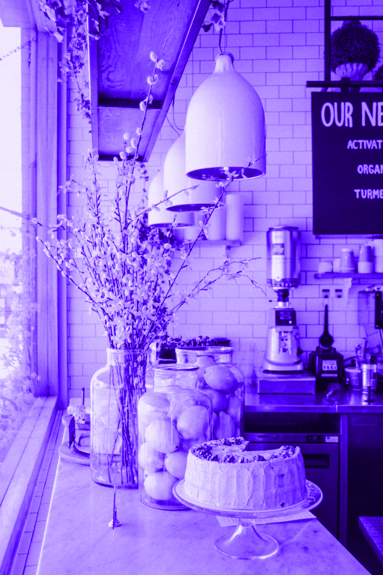

Accross the space we will be exhibiting a diverse group of local artists, designers and makers.

Just on the the edge of Finsbury Square we have a beautiful light filled space, perfect for showing off the amazing work of local creatives. If you are interested in showing some of your work, please pop in and speak to Rik.